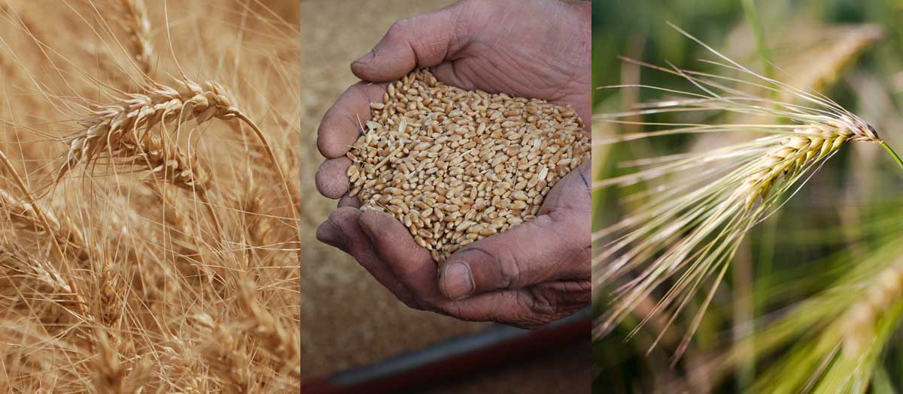

Idaho Wheat Production Guide

Introduction
The Idaho Wheat Production Guide is a “one-stop shop” where Idaho wheat producers can access the latest research results and production recommendations from wheat researchers in Idaho and surrounding region.
How to use this guide
Browse topics in the sidebar, or . Save, download and print articles, bulletins, and guide sections individually, or download the full Wheat Production Guide as a printable booklet.
Contributors
This guide is a project of the University of Idaho, with funding from the Idaho Wheat Commission. Contributors include Idaho and regional researchers.
Personnel: Dr. Juliet M Marshall, Ext. Crop Mgmt. Specialist (SC and E Idaho) Douglas Finkelnburg, Area Extension Educator, Cropping Systems (N Idaho) Justin Hatch, Extension Educator, Caribou County Dr. Kurtis Schroeder, Moscow, Ext. Crop Mgmt. Specialist (N Idaho) Dr. Julia Piaskowski, CALS Director of Statistical Programs Many others.
Funding Sources
This project is financially supported by: - Idaho Wheat Commission
- Idaho Agricultural Experiment Station
Basic Recommendations and Quick Facts
Idaho Wheat Quick Facts
Soft White Spring Wheat
Hard Spring Wheat
Soft White Winter Wheat
Hard Winter Wheat
Wheat in Idaho - Introduction
Agronomic zones
Agronomic Zones of the Dryland Pacific Northwest - PNW Extension
Production, acreage, classes, quality
Markets – domestic and export
Growth and development
Wheat - spring and winter
Spring wheat
Winter wheat
Wheat Growth Stages and Associated Management - Ohio Extension